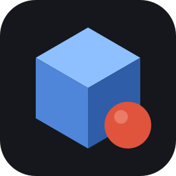

3DI
Studio
Arquivo
Exemplos
Ponte offline
Novo
Ctrl Alt N
Abrir…
Ctrl O
Salvar
Ctrl S
Frente
Lado
Topo
Persp.
Enquadrar
Peças
Vistas
Referência
Exportar
Imagem e modelo
Imagem PNG
O quadro atual da vista
Modelo GLB
Malha com cores e materiais (glTF)
Conferir GLB…
Exporta e compara com o shader, com relatório
Vídeo
Vídeo MP4…
Timeline, falas, legendas e textos
Conferir GLB
Dividido
GLB
Shader
Sólido
Triângulos
Normais
detalhe
64
96
128
192
256
Reexportar
Ângulo do editor
Salvar .glb
Fechar
Shader (forma exata)
GLB exportado
Exportando…
Cancelar